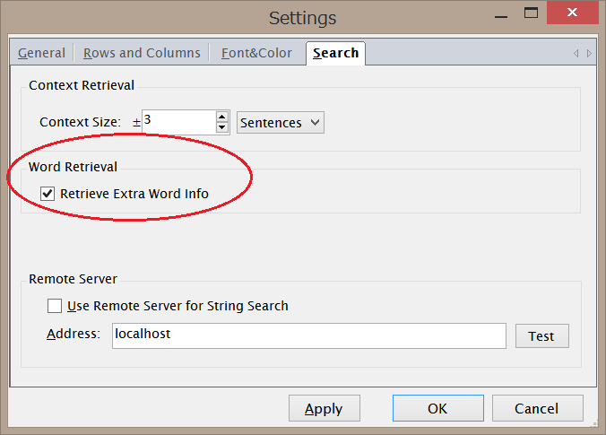

Kwic Viewを二分割表示する
メニュー"View" - "Split KWIC View" またはツールバー をクリックすると、KWIC Viewが上下２画面に分割されます。
をクリックすると、KWIC Viewが上下２画面に分割されます。
２画面モード時に上下いずれかのKWIC Viewをクリックすると青い縁取りが現れます。これは、そのViewがカレントViewであることを示します。 検索コマンドの結果はカレントViewに表示されますので、カレントを切り替えながら異なる検索条件で検索を行うと、検索結果同士を上下画面で 比較することができます。
{kind=link}
真中のスプリッタ―（分割線）をマウスドラッグすることにより分割位置を調整できます。元の1画面表示に戻すにはもう一度同じコマンド/ボタンをクリックします。
典型的な使い方として、上のViewにProject=0の検索結果を、下のViewにProject=1の検索結果を表示することにより複数のProject内容を対比することなどが想定されています。
カレント行自動同期機能
２画面モード時に、片側のViewのカレント行（1行の全体がグレー背景になっている状態）が変更されると、その行の文番号と同一の文番号の 行がもう一方のViewにも存在すれば、その行が自動的にカレント行となります。この時、行が見えていない状態であれば見えるようにスクロールも 行われます。Up, Down, PageUp, PageDownキーによりカレント行を変更した場合もこの自動同期が働きます。
一方、この同期機能はスクロールバーを操作するだけでは動作しません。これは、文の順序が上下のViewで必ずしも一致しているとは限らないため （ソートを行った場合など）です。
Word間マッピング表示機能
ImportWordRelation.exe によりWord-Wordマッピングをコーパスにインポートしてある場合は、マッピングのFrom側に一致するWord上にマウスを 置いたときにWord背景が青色となり、同時にTo側に対応するWordの背景が自動的に赤色になります。つまり、青色背景のWordから赤色背景のWordへの マッピングが存在することを、Word上にマウスを持っていくことにより確認することができます。
- （注意）word-wordマッピング情報は、設定ダイアログ（メニューの"Options" - "Settings"で表示されるダイアログ）の"Search"タブにおいて、"Retrieve Extra Word Info"がONになっていないと検索時に読み込まれません（デフォルトではOFF）。これは、マッピングが不要な場合の検索速度に影響を与えないようにするための措置です。（なお、時間情報もこのオプションをONにしないと読み込まれません。）

{kind=link}
下図にKwic View内でWord-Wordマッピングを表示した例を示します。
{kind=link}